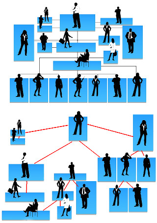

|
The spy network of the WSA has grown too big, downsizing is unavoidable. Unfortunately the Trade Union of Spies is large and strong, and they have spies everywhere. After many months of fruitless fighting, the management of the WSA met the representatives of the union, and together they came up with two directed trees. The first tree represents the hierarchy of the WSA. Each employee is a node, and each node is the head of a department (the node together with all its descendants). Each node is tagged with an integer that specifies how many employees have to be in that department to keep the organization operational. The second tree is the hierarchy of the union - a different hierarchy with different integers, but the meaning of the tree is the same. All employees are present in both trees. Your task is to determine which employees to dismiss to get the smallest possible organization while still keeping all WSA and union departments operational. |

source: http://pixabay.com/en/silhouettes-hierarchy-human-man-81830/ |
Note that department heads may be fired - in which case a subordinate will be the new head; but some departments may have a tag of 0, meaning that the department is superfluous and may be eliminated altogether.
Example input5 1 0 1 2 2 0 1 2 2 1 2 0 2 1 0 1 1 3 0 0 | Example output2 4 2 |